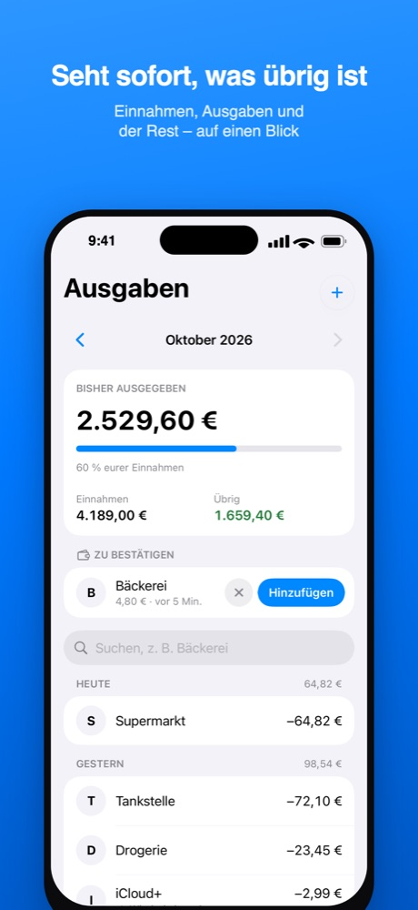
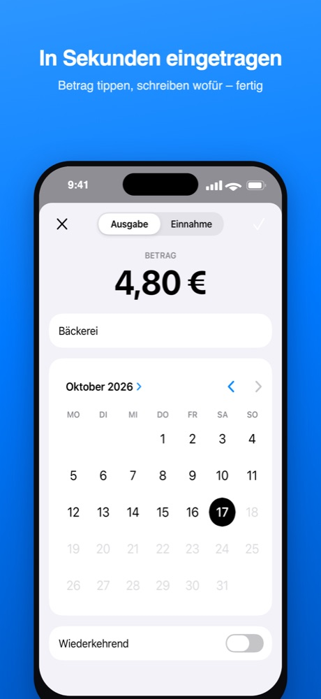
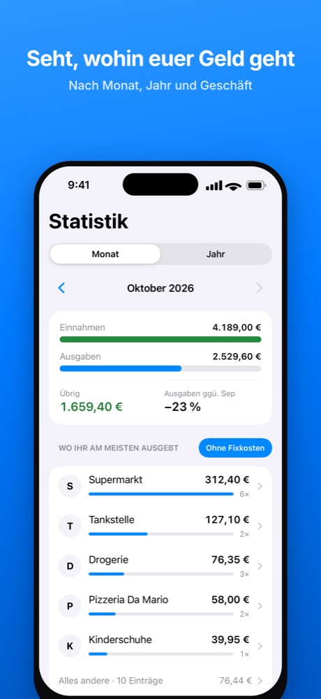
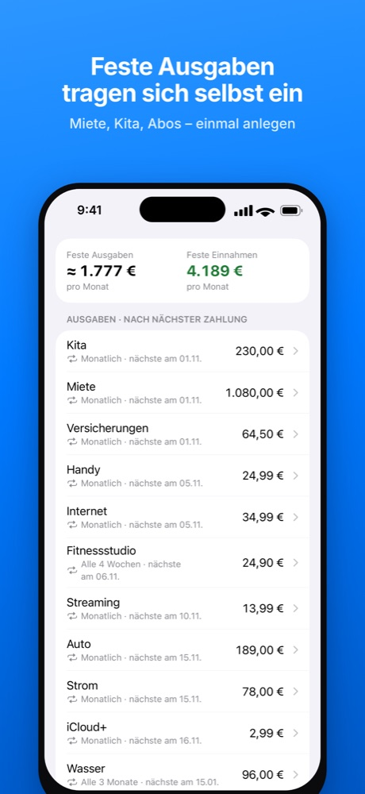
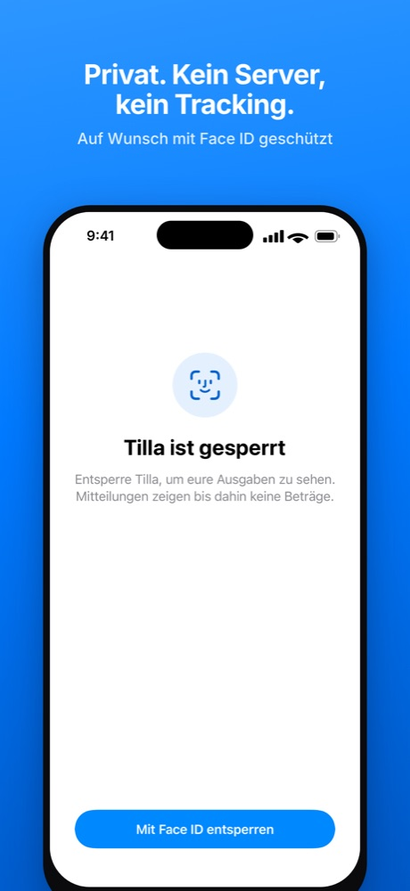

Tilla
Gemeinsame Ausgaben im Blick
Das gemeinsame Haushaltsbuch für Paare, Familien und WGs: Ihr tragt ein, was ihr ausgebt, und seht jederzeit, wie viel von euren Einnahmen diesen Monat noch übrig ist – ohne Kategorien, Budgets oder Tabellen.
Bald im App Store · iPhone




Seht sofort, was übrig ist
Einnahmen, Ausgaben und der Rest – auf einen Blick.
In Sekunden eingetragen
Betrag tippen, schreiben wofür – fertig. Mit Apple Pay und Siri sogar ohne die App zu öffnen.
Feste Ausgaben tragen sich selbst ein
Miete, Kita, Abos – einmal anlegen.
Gemeinsam über iCloud
Ohne neues Konto, ohne Passwort.
Privat. Kein Server, kein Tracking.
Eure Einträge liegen nur auf euren Geräten und in eurem iCloud. Auf Wunsch mit Face ID geschützt.